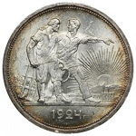

Цинковые монеты - чистка, хранениеСеребренные монеты - что нельзя делать с серебренными монетамиПлатиновые монеты - чистка, инвестиции в монеты
Цинковые монеты - чистка, хранение
Конечно, цинквые монеты не совсем лучшие для понятий коллекционными монетами. Цинковые монеты в основном встречаются среди меньших номиналов. В истории Германии они неоднократно появлялись среди копеек. В качестве...

Серебренные монеты - что нельзя делать с серебряными монетами
Нет сомнений в том, что серебряные монеты являются одной из наиболее широко собираемых и популярных монет. Причины многообразны. ни имеют самые красивые мотивы, циркулируют на протяжении тысячелетий...
Платиновые монеты - чистка, инвестиции в монеты
В этой статье вы узнаете необхдимую для мумизмата инрмацию о платиновых монетах. Платиновые монеты всегда обязательная часть экзотической коллекции. Во-первых, есть только небольшой выбор такого...
Никелевые монеты - Никель, как добавочный металл предпочтительный для монет.
В этой статье вы уузнаете, как чистить, ухаживать и что не следует делать с никелевыми монетами.